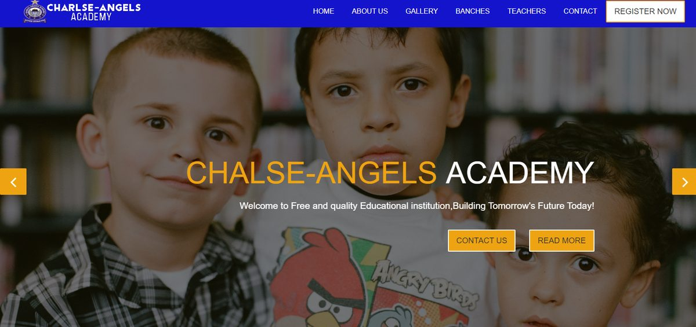
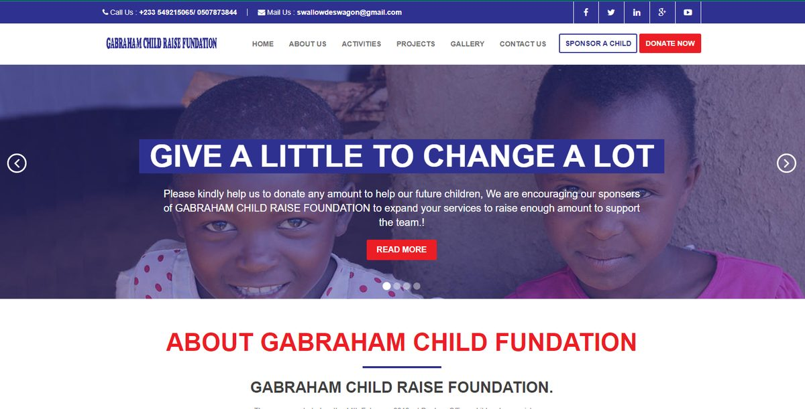
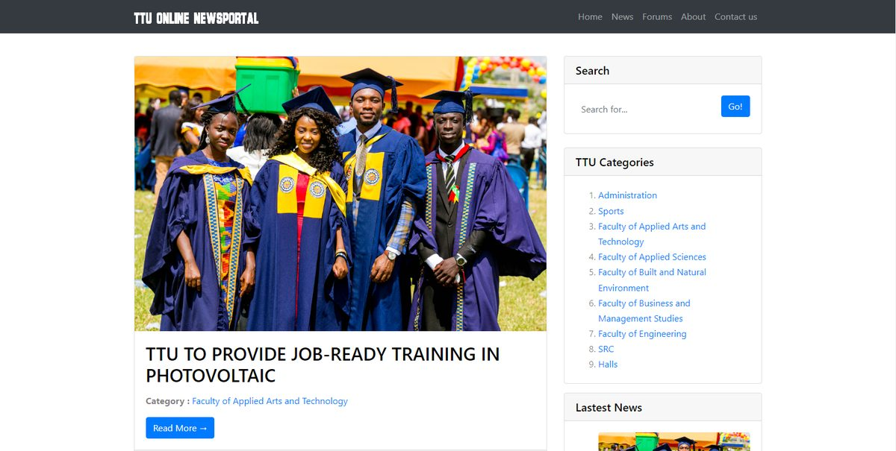
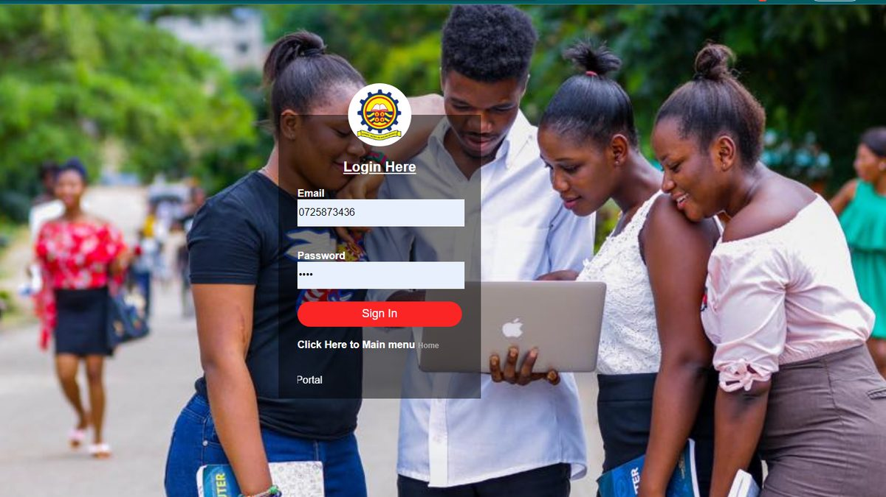
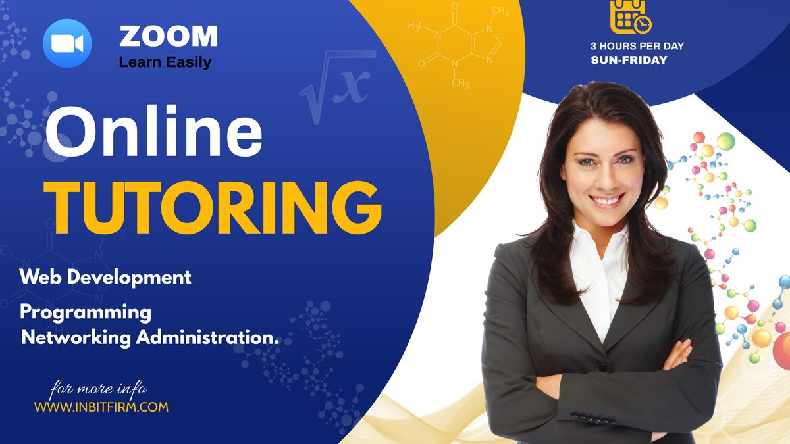
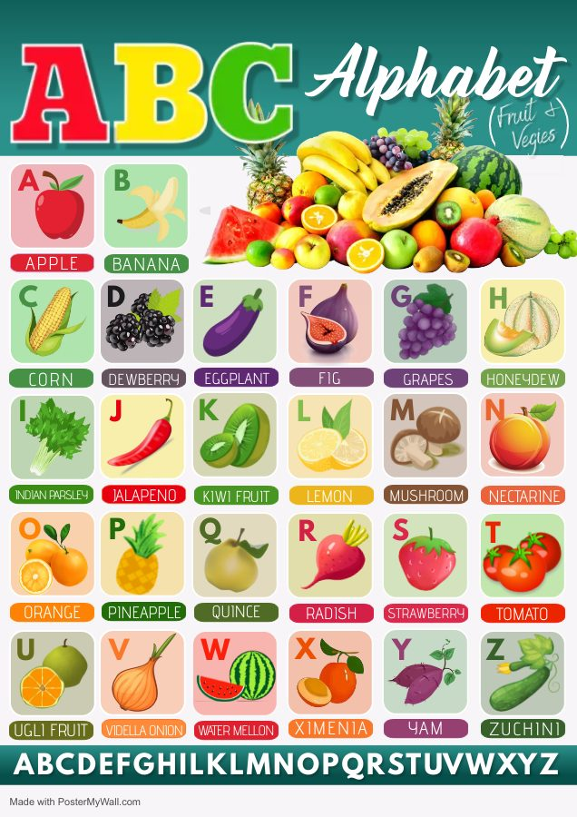
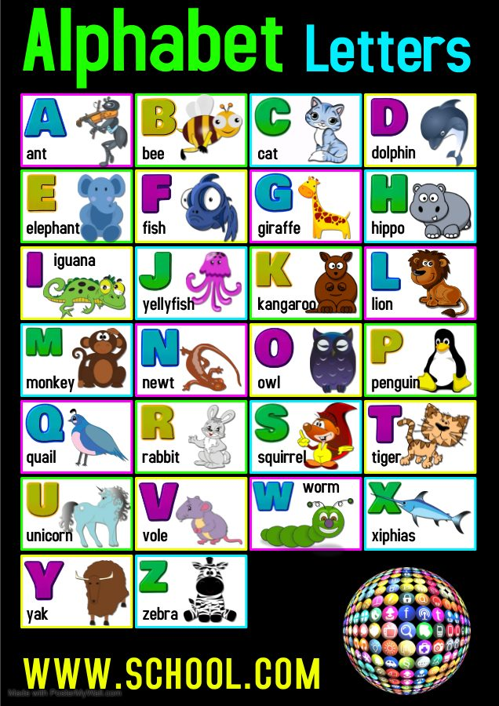

End-to-end ownership
I take systems from requirements and database design through deployment, then train the people who use them and support them afterwards.
Open to new opportunities
Hello, I'm
Software Engineer building enterprise web systems
I've spent more than six years designing, building and supporting the platforms universities rely on, from requirements and database design through deployment, user training and day-to-day support.
01 About me
I'm a Software Engineer with more than six years of experience designing, building and supporting enterprise web systems for higher-education institutions. My background is in PHP and MySQL application development, learning management systems, database design and administration, and integrating third-party systems.
I currently deliver and support core academic and administrative platforms at KAAF University. Before that, I led the LeMAS and Systems Support team at Accra Institute of Technology. I'm comfortable owning a system from start to finish: requirements, architecture, development, deployment, user training and ongoing support.
I take systems from requirements and database design through deployment, then train the people who use them and support them afterwards.
AIT promoted me to Team Leader for my technical work. I led the software team, ran code reviews and mentored junior developers.
I work with LMS platforms (Moodle, Canvas), student portals, ERP integrations (PeopleSoft, Banner) and institutional reporting.
As a former IT instructor, I explain technical issues in plain language to faculty, students and administrators.
Select a stage to see what I do there.
I run needs assessments with departments and stakeholders, turn their goals into clear requirements, and prepare cost estimates and recommendations for management.
I design database structures and schemas for data integrity, fast access and scalability, and keep them compatible with the other university platforms.
I build PHP/MySQL applications with Laravel and CodeIgniter, write reusable tools and subsystems, and review code to keep quality high.
I plan rollouts, deploy to Linux and Windows servers or cPanel hosting, and connect LMS and ERP platforms to internal systems.
I train faculty, students and administrators, explaining technical issues in plain language for non-technical users.
I debug issues, look after backups and recovery, and monitor performance so the platforms stay up and dependable.
02 Experience
Nine years in IT, from teaching computing and running school networks to leading software teams at universities.
KAAF University · Gomoa Fetteh Kakraba, Ghana
Accra Institute of Technology · Accra, Ghana
Promoted for technical performance and leadership, with an additional responsibility allowance from management.
Mary's Child Educational Complex · Ghana
Takoradi Technical University · Takoradi, Ghana
Fekwon College · Takoradi, Ghana
03 Skills
Hiring? Paste the skills from your job description to see how they match my experience.
04 Projects
Institutional platforms from my roles, plus products I've built on my own time under INB IT Firm. Select a card for details.
My role: Led development, implementation and ongoing support; later Team Leader for LeMAS & Systems Support.
PHP, MySQL, optimised database design
My role: Software Engineer, responsible for delivering and supporting core academic and administrative platforms.
My role: Designed, deployed and maintained the sites; managed planning and rollout.
My role: Sole builder, from concept and data model to modules and dashboards.
My role: Designed and developed each platform independently.
Background: Set up and ran the Fekwon College network (cabling, routers, switches, user accounts) and maintained school labs.







05 Education & more
Software Engineering
Takoradi Technical University
Information Technology
Takoradi Technical University
Professional references from KAAF University management are available on request.
Request references06 Contact
Hiring for a software engineering, systems or technical lead role? I'd like to hear about it. I usually reply within a day.
{kind=link}
{kind=link}
{kind=link}
{kind=link}
{kind=link}
{kind=link}
{kind=link}